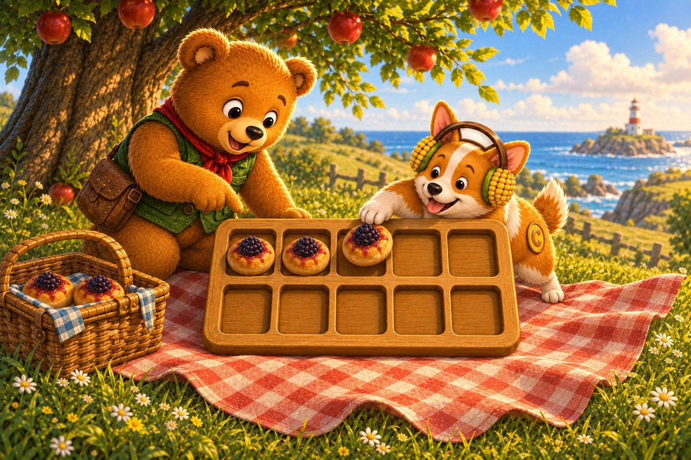
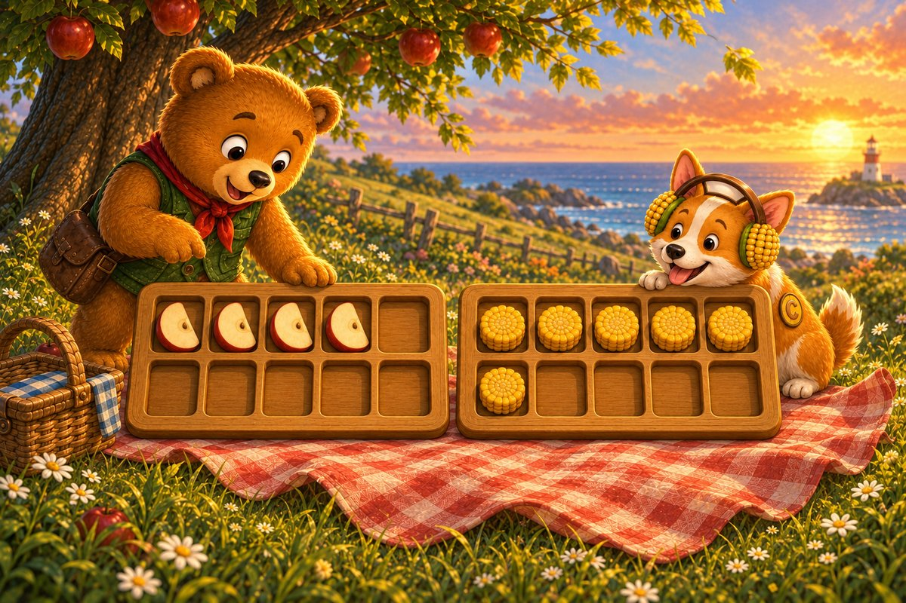
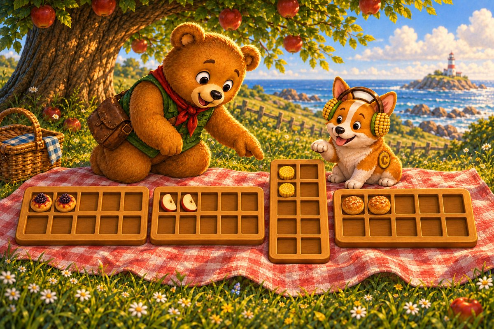
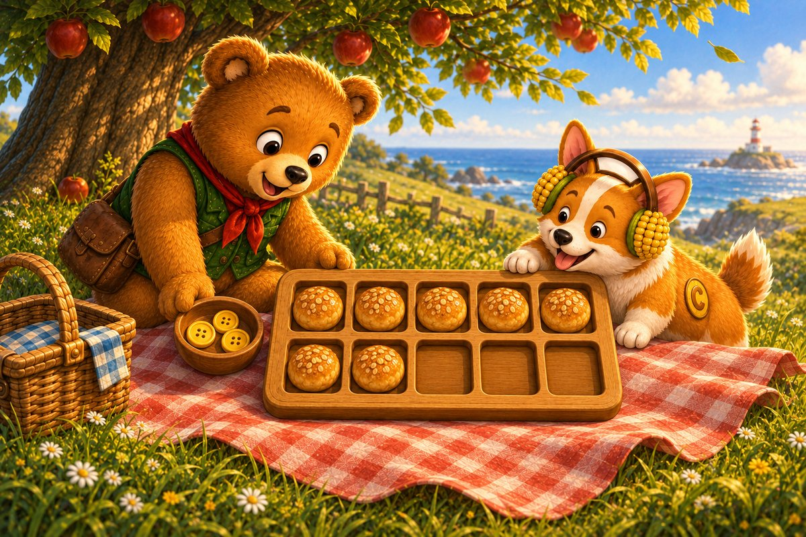
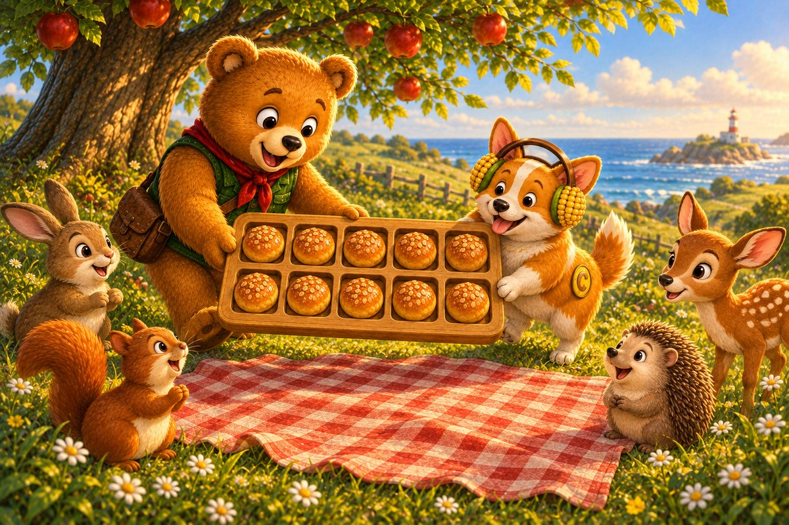

Corgi sets a ten-frame picnic board beneath the apple tree. A gust flips the cloth and scatters the treats into the grass. Ted-E-Bear holds the corners while Corgi checks the spaces in the first row.
Try it: How many spaces are in one row?
4
5
6
Show the answer
5. Five spaces make one complete row.

Page 2 of 6 · Buns in the First Row
Corgi finds a small group of berry buns beside the basket and places one bun in each space from the left. Ted-E-Bear points to the filled spaces so they can see the group without counting the empty ones.
Try it: How many berry buns are in the frame?
2
3
5
Show the answer
3. Three buns sit together in the first row.

Page 3 of 6 · Which Tray Has More?
Ted-E-Bear returns with four apple slices while Corgi carries six corn cakes. They arrange both groups on matching frames. The picnic guests need the fuller tray first, so the friends compare the spaces side by side.
Try it: Which tray has more treats?
4 treats
6 treats
They match
Show the answer
6 treats. Six is more than four.

Page 4 of 6 · The Odd Picnic Frame
The friends line up the picnic frames, but one shape does not match the others. Its spaces run in a different direction and make the group harder to read. Corgi pauses before touching anything so Ted can spot the muddled frame.
Try it: Which frame does not match the others?
The sideways frame
The full frame
The empty frame
Show the answer
The sideways frame. The sideways frame was the odd one out.

Page 5 of 6 · Spaces Still Empty
Seven treats are ready on the picnic board, but some spaces are still empty. Ted-E-Bear brings a bowl of honey buttons. Corgi must count the open spaces to choose exactly enough buttons to complete the frame.
Try it: How many more treats make ten?
2
3
4
Show the answer
3. Seven and three make ten.

Page 6 of 6 · Ready to Share
The guests arrive as Corgi fills the final open space. Every treat now sits in two tidy rows, making the whole group easy to see. Ted-E-Bear carries the completed frame to the blanket for one final count.
Try it: Count the complete ten-frame.
8
10
12
Show the answer
10. Two rows of five make ten.
The end · Great counting
Why is a ten-frame easy to count?
Talk about the answer
Its spaces sit in two rows of five, so you can see how many treats there are, and how many more make ten, without counting one by one.
The picnic is ready! You saw the groups, filled the frames, and made ten in more than one way. SnackPack 123 Counting has more number stories, counting games and ten-frames.